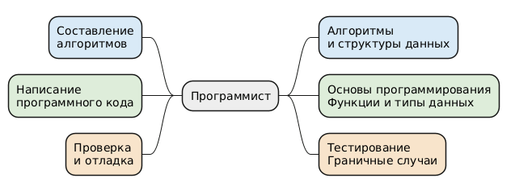

' Версия 4: объединены задачи и умения; цвет связывает пары @startmindmap skinparam backgroundColor white skinparam shadowing false *[#EEEEEE] Программист **[#D9EAF7] Алгоритмы\nи структуры данных **[#DEEDDA] Основы программирования\nФункции и типы данных **[#F8E4CB] Тестирование\nГраничные случаи left side **[#D9EAF7] Составление\nалгоритмов **[#DEEDDA] Написание\nпрограммного кода **[#F8E4CB] Проверка\nи отладка @endmindmap
